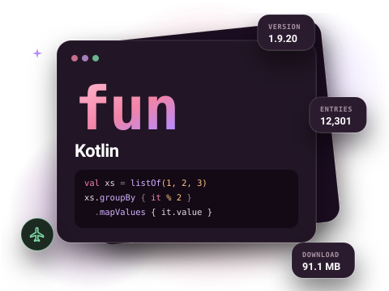
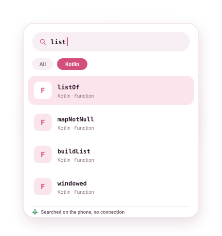

Kotlin documentation, offline on Android
The Kotlin standard library API, downloaded to your phone and searchable without a connection. Check the exact behaviour of windowed, associateBy or buildList without opening a browser.

What is in the Kotlin docset
This docset is the API reference of the Kotlin standard library (kotlin.collections, kotlin.text, kotlin.sequences, scope functions such as let and apply, and the rest of stdlib). It comes from the community-contributed catalogue, where the current build is version 1.9.20.
Two honest limits: the docset is the standard library, not the language guide, and kotlinx.coroutines is not part of it. For Android APIs written in Kotlin, install the separate Android (Kotlin) docset.
- Version
- 1.9.20
- Entries
- 12,301
- Download
- 91.1 MB
- Source
- Community-contributed docset

Example entries you can search offline
A few real entries from the Kotlin docset's index, as they appear in search results:
| Entry | Type |
|---|---|
| listOf | Function |
| mapNotNull | Function |
| groupBy | Function |
| associateBy | Function |
| buildList | Function |
| windowed | Function |
| chunked | Function |
| takeIf | Function |
| Result | Class |
| Regex | Class |
How to get the Kotlin documentation offline
- Install DevDocs from Google Play. It is free and needs no account.
- Open the Store tab and search for Kotlin.
- Tap Download. The docset downloads in the background (91.1 MB compressed) and is indexed on your phone.
- Open Search or the docset in your Library. From now on it works with no connection.
Tips for searching the Kotlin docs
- Many collection functions have several overloads (for
List,Sequence,Map…). They show as separate results; the docset name under each result helps you pick. - Install Kotlin together with Android (Kotlin) and Java: one search then covers all three, which is handy when a Java API is called from Kotlin.
- Use the reader's font size and reading-width settings for long signatures on a small screen.
Related docsets
Also in the DevDocs Store: Android (Kotlin), Java, Gradle DSL, Gradle User Guide. Install any of them and one search covers them all. See also: Android documentation offline and Java documentation offline.
Kotlin docs offline: questions
Is this the latest Kotlin version?
Are coroutines included?
How big is the download?
More answers in the DevDocs FAQ.
Other documentation you can keep offline
- Python 16,146 entries
- Java 59,956 entries
- JavaScript 9,447 entries
- Android (Kotlin) 200,572 entries
- React 1,369 entries
- Django 5,705 entries
Or browse all 806 docsets by category.
Get the Kotlin docs on your phone
DevDocs is free, has no ads and needs no account.